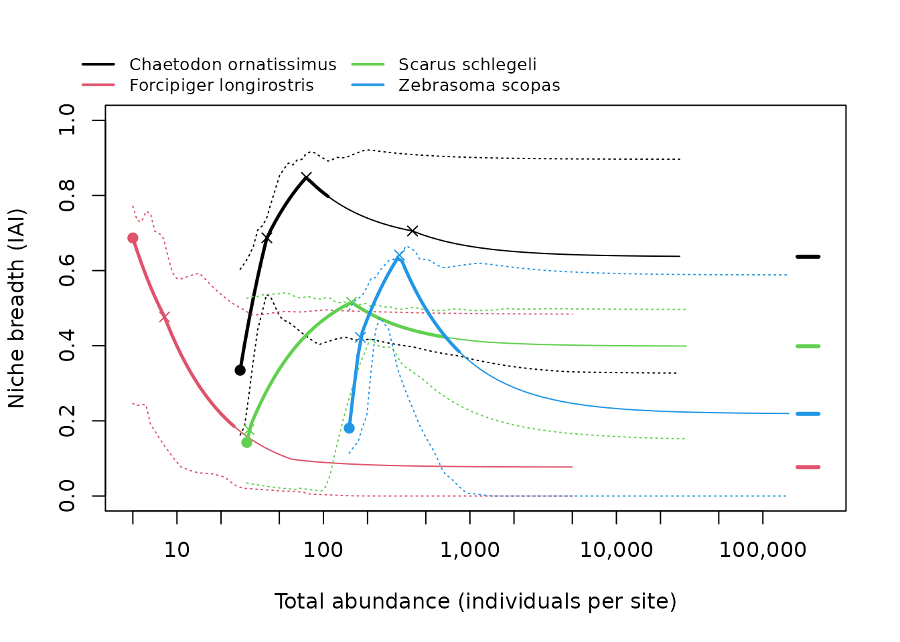

isoniche estimates the habitat niche breadth of species from counts in several habitats, corrected for abundance. Classic indices (Levins’ B, 1 - Gini of habitat proportions, Shannon…) make rare species look like specialists: when a species is rare, its few individuals sit in its preferred habitat; when it is abundant, it spills into others. isoniche uses isodars, the relationships between a species’ densities in pairs of habitats, to predict where individuals settle at any total abundance, and reports two numbers per species:
- density-independent (DI) niche breadth: how widely the species uses habitats when it is rare, at the spillover abundance where it first occupies all the habitats it uses;
- density-dependent (DD) niche breadth: how widely it uses habitats when it is abundant.
Both are on a 0-1 scale (0: one habitat only; 1: equal use of all habitats) and, unlike classic indices, they can be compared among species that differ in abundance.
This vignette walks through a complete analysis. The other vignettes go into more detail:
-
vignette("data-preparation"): data formats, effort, choosing habitats, absent habitats, grouping sites; -
vignette("diagnostics"): when to trust an estimate and what to do when a species is flagged; -
vignette("method"): how the method works (Granot, Dubiner & Belmaker 2026).
What you need
Counts of each species in two or more habitats, in many replicates: sites, or repeated surveys of the same site. Replicates should span a range of abundances, because isodars are estimated from how abundance in one habitat changes with abundance in another. As a rule of thumb, aim for at least 10 replicates per species, most of them sampling every habitat.
1. Your data
isoniche works on data in long format, one row per species x site x habitat, with the number of individuals counted. A habitat not sampled at a site simply has no row; a habitat sampled where the species was not found should have a row with a count of 0.
The package includes counts of 325 reef fish species in three habitats (barrier reef, fringing reef, outer slope) at 13 sites around Moorea, French Polynesia:
head(moorea_fish)
#> species site habitat abundance
#> 1 Abudefduf septemfasciatus Afareaitu barrier_reef 0
#> 2 Abudefduf septemfasciatus Afareaitu fringing_reef 1
#> 3 Abudefduf septemfasciatus Afareaitu outer_slope 0
#> 4 Abudefduf septemfasciatus Aroa barrier_reef 8
#> 5 Abudefduf septemfasciatus Aroa fringing_reef 7
#> 6 Abudefduf septemfasciatus Aroa outer_slope 0If your data are a community matrix (samples x species, as used by
vegan) with a separate table describing each sample,
convert them with community_to_long():
comm <- matrix(c(12, 0, 3,
8, 2, 0,
0, 5, 9),
nrow = 3, byrow = TRUE,
dimnames = list(NULL, c("sp_a", "sp_b", "sp_c")))
samples <- data.frame(site = c("north", "north", "south"),
habitat = c("reef", "lagoon", "reef"))
community_to_long(comm, samples, site = "site", habitat = "habitat")
#> # A tibble: 9 × 5
#> species site habitat abundance effort
#> <chr> <chr> <chr> <dbl> <dbl>
#> 1 sp_a north lagoon 8 1
#> 2 sp_a north reef 12 1
#> 3 sp_a south reef 0 1
#> 4 sp_b north lagoon 2 1
#> 5 sp_b north reef 0 1
#> 6 sp_b south reef 5 1
#> 7 sp_c north lagoon 0 1
#> 8 sp_c north reef 3 1
#> 9 sp_c south reef 9 1Several samples from the same site and habitat are pooled, and their
effort (here the number of samples) is summed into an
effort column. If samples differ in effort, for example in
transect area, give that column to community_to_long() and
pass it on as effort = to the functions below; set
reference_effort to a natural unit such as one standard
transect. See vignette("data-preparation").
2. Check coverage
Before estimating anything, check how well each species was sampled:
cov <- check_coverage(moorea_fish, species = "species", site = "site",
habitat = "habitat", abundance = "abundance")
cov[cov$species == "Chaetodon ornatissimus", ]
#> # A tibble: 3 × 8
#> species habitat n_sites n_complete n_sampled n_occupied total_count status
#> <chr> <chr> <int> <int> <dbl> <dbl> <dbl> <chr>
#> 1 Chaetodon … barrie… 13 13 13 13 136 used
#> 2 Chaetodon … fringi… 13 13 13 10 155 used
#> 3 Chaetodon … outer_… 13 13 13 13 301 used
table(cov$status)
#>
#> absent undersampled used
#> 148 177 650For each species and habitat, n_sites is the number of
sites where the species was recorded, n_occupied the number
where it was found in this habitat, and status says how the
habitat will be treated: "used", "absent"
(never found in it although it was sampled at several sites where the
species occurred; it counts as 0 and lowers niche breadth) or
"undersampled" (no records, but too few sites to tell).
3. Estimate niche breadth
We analyse 12 species that were recorded at almost every site, in
every habitat. niche_breadth() fits the isodars of every
species, computes DI and DD niche breadth and the spillover abundance,
and gives bootstrap confidence intervals by resampling whole sites
(n_boot replicates; we use 99 to keep this vignette fast,
but use 999 or more for publication):
species <- c("Balistapus undulatus", "Chaetodon ornatissimus",
"Chaetodon ulietensis", "Ctenochaetus binotatus",
"Dascyllus flavicaudus", "Forcipiger longirostris",
"Halichoeres marginatus", "Heniochus chrysostomus",
"Parupeneus multifasciatus", "Sargocentron microstoma",
"Scarus schlegeli", "Zebrasoma scopas")
fish <- moorea_fish[moorea_fish$species %in% species, ]
nb <- niche_breadth(fish, species = "species", site = "site",
habitat = "habitat", abundance = "abundance",
n_boot = 99, seed = 1)
nb
#> # A tibble: 12 × 35
#> species method n_sites nb_di nb_di_lower nb_di_upper spillover_abundance
#> <chr> <chr> <int> <dbl> <dbl> <dbl> <dbl>
#> 1 Balistapus … pairw… 13 0.115 0.0933 0.547 36
#> 2 Chaetodon o… pairw… 13 0.335 0.200 0.457 27
#> 3 Chaetodon u… pairw… 12 0.534 0.338 0.784 14
#> 4 Ctenochaetu… pairw… 11 0.543 0.332 0.957 11
#> 5 Dascyllus f… pairw… 13 0.211 0.0730 0.489 60
#> 6 Forcipiger … pairw… 13 0.687 0.0930 0.937 5
#> 7 Halichoeres… pairw… 13 0.692 0.480 0.764 10
#> 8 Heniochus c… pairw… 13 0.337 0.133 0.596 14
#> 9 Parupeneus … pairw… 13 0.225 0.174 0.551 89
#> 10 Sargocentro… pairw… 13 0.609 0.508 0.787 13
#> 11 Scarus schl… pairw… 13 0.143 0.0573 0.625 30
#> 12 Zebrasoma s… pairw… 13 0.181 0.117 0.396 150
#> # ℹ 28 more variables: spillover_lower <dbl>, spillover_upper <dbl>,
#> # nb_dd <dbl>, nb_dd_lower <dbl>, nb_dd_upper <dbl>, dependent_at <dbl>,
#> # var_explained <dbl>, intercept_p <dbl>, absent <chr>, abandoned <chr>,
#> # reversals <list>, n_boot_valid <int>, flags <chr>, flag_few_sites <lgl>,
#> # flag_few_pair_sites <lgl>, flag_low_abundance <lgl>,
#> # flag_di_extrapolation <lgl>, flag_dd_extrapolation <lgl>,
#> # flag_abandoned <lgl>, flag_reversal <lgl>, flag_poor_fit <lgl>, …
#> 7 species flagged (not counting abandoned habitats or reversals); see summary()
#> Abundances are per site (equal effort in every site and habitat).The result is a table with one row per species. The main columns:
-
nb_di(withnb_di_lower,nb_di_upper): DI niche breadth and its confidence interval; -
spillover_abundance: the total abundance (individuals per sampling unit, here per site) at which the species first occupies every habitat it uses; DI niche breadth is measured there; -
nb_dd: DD niche breadth, the limit at high abundance; -
flags: diagnostics raised for the species.
res <- as.data.frame(nb[c("species", "nb_di", "nb_di_lower", "nb_di_upper",
"spillover_abundance", "nb_dd", "nb_dd_lower",
"nb_dd_upper")])
res[-1] <- round(res[-1], 2)
res[order(-res$nb_di), ]
#> species nb_di nb_di_lower nb_di_upper spillover_abundance
#> 6 Forcipiger longirostris 0.69 0.09 0.94 5
#> 7 Halichoeres marginatus 0.69 0.48 0.76 10
#> 10 Sargocentron microstoma 0.61 0.51 0.79 13
#> 4 Ctenochaetus binotatus 0.54 0.33 0.96 11
#> 3 Chaetodon ulietensis 0.53 0.34 0.78 14
#> 8 Heniochus chrysostomus 0.34 0.13 0.60 14
#> 2 Chaetodon ornatissimus 0.33 0.20 0.46 27
#> 9 Parupeneus multifasciatus 0.23 0.17 0.55 89
#> 5 Dascyllus flavicaudus 0.21 0.07 0.49 60
#> 12 Zebrasoma scopas 0.18 0.12 0.40 150
#> 11 Scarus schlegeli 0.14 0.06 0.62 30
#> 1 Balistapus undulatus 0.12 0.09 0.55 36
#> nb_dd nb_dd_lower nb_dd_upper
#> 6 0.08 0.00 0.58
#> 7 0.62 0.00 0.84
#> 10 0.00 0.00 0.19
#> 4 0.11 0.00 0.45
#> 3 0.48 0.00 0.49
#> 8 0.11 0.00 0.25
#> 2 0.64 0.29 0.89
#> 9 0.28 0.01 0.54
#> 5 0.01 0.00 0.06
#> 12 0.22 0.00 0.43
#> 11 0.40 0.30 0.49
#> 1 0.40 0.02 0.56A species with high DI niche breadth uses several habitats even when rare: its isodar intercepts are small, so it has no strongly preferred habitat. A species with high DD niche breadth spreads evenly among habitats when abundant: its isodar slopes are close to 1, so its habitats fill at similar rates. The two need not agree; a species can be a specialist when rare and a generalist when abundant, or the reverse.
4. Check the diagnostics
Every species gets logical flag_* columns.
summary() counts them and explains what to do about
each:
summary(nb)
#> Niche breadth for 12 species
#> DD niche breadth at: asymptote; bootstrap replicates: 99
#> with DI and DD estimates: 12
#> without warning flags: 5
#>
#> Estimates (quartiles):
#> min q25 median q75 max
#> nb_di 0.115 0.204 0.336 0.559 0.692
#> spillover_abundance 5.000 12.500 20.500 42.000 150.000
#> nb_dd 0.000 0.100 0.249 0.424 0.637
#>
#> Flags raised (species):
#> unstable_bootstrap 7 many bootstrap replicates failed, or a confidence interval is very wide
#> -> increase n_boot; if still wide, the data cannot resolve niche breadth
#> intercept_noise 1 isodar intercepts do not differ from sampling noise
#> -> no evidence that niche breadth changes with abundance; report DD niche breadth
#> reversal 12 habitats change rank along the niche breadth curve
#> -> informational: compare species at a stated abundance (see iai_curve())
#> abandoned 6 a used habitat is abandoned at high density
#> -> informational: the habitat counts for DI but not for DD niche breadth
#>
#> See vignette("diagnostics") for details. Thresholds are set with niche_breadth(diagnostics = ).reversal and abandoned describe the species
rather than a problem: the ranking of habitats changes with abundance,
or a habitat used when the species is rare is left empty when it is
abundant. The others are warnings. Here most species are flagged
unstable_bootstrap: with only 13 sites, the confidence
intervals are wide (see the table above), and several DD intervals reach
0. This is a property of the data, not of the method: niche breadth is
estimated from the spread of densities across sites, and 13 sites
constrain it only loosely. More replicates narrow the intervals.
To keep only species without warnings:
See vignette("diagnostics") for each flag.
5. Niche breadth across abundances
DI and DD niche breadth are the two ends of a curve: niche breadth as
a function of total abundance, much like a rarefaction curve.
iai_curve() computes it, and plot() draws it
(here for four species):
curves <- iai_curve(nb, n_boot = 49, seed = 1)
plot(curves, species = c("Chaetodon ornatissimus", "Forcipiger longirostris",
"Scarus schlegeli", "Zebrasoma scopas"))
Each curve starts at the species’ spillover abundance (filled point, DI niche breadth) and approaches DD niche breadth (dash on the right); dotted lines are the bootstrap band and crosses mark preference reversals.
6. Compare species
Because the estimates do not depend on how abundant a species happened to be, they can be compared among species, or related to traits. Ranks by DI and by DD niche breadth can differ:
plot(nb$nb_di, nb$nb_dd, pch = 19, xlim = c(0, 1), ylim = c(0, 1),
xlab = "DI niche breadth", ylab = "DD niche breadth")
abline(0, 1, lty = 2)
cor(nb$nb_di, nb$nb_dd, method = "spearman")
#> [1] -0.1608392Where two species’ curves cross, which one is the broader generalist depends on the abundance at which they are compared. These crossings are listed in a table:
head(attr(curves, "crossings"))
#> # A tibble: 6 × 4
#> species_1 species_2 total_abundance niche_breadth
#> <chr> <chr> <dbl> <dbl>
#> 1 Balistapus undulatus Ctenochaetus binotatus 65.4 0.263
#> 2 Balistapus undulatus Dascyllus flavicaudus 157. 0.345
#> 3 Balistapus undulatus Forcipiger longirostris 37.6 0.134
#> 4 Balistapus undulatus Heniochus chrysostomus 71.4 0.274
#> 5 Balistapus undulatus Parupeneus multifasciatus 95.1 0.307
#> 6 Balistapus undulatus Parupeneus multifasciatus 710. 0.3917. Reporting
When reporting results, state:
- the habitats included, and which were treated as absent for each species;
- the sampling unit of abundance (
reference_effort; seevignette("data-preparation")): DI niche breadth and spillover abundance depend on it, DD niche breadth does not; - the isodar method (
dim, by default pairwise isodars with inverse-variance weights) and where DD niche breadth was evaluated (dependent_at, by default the asymptote); - the number of bootstrap replicates and the diagnostic thresholds, and how flagged species were handled;
- the package version (
packageVersion("isoniche")) and the paper (citation("isoniche")).